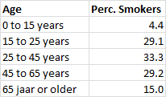
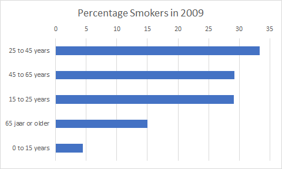
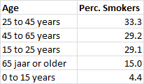
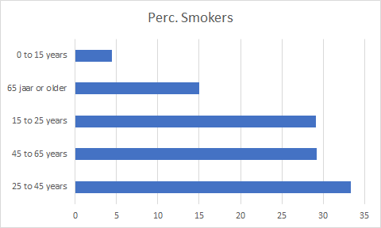
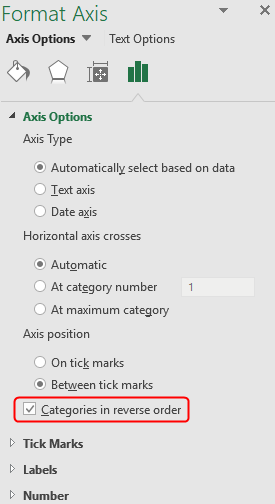

Chart type that is very suitable for displaying rankings.
Bar charts are widely used to make clear differences in ranking. The importance
(priority) of certain matters at the same moment can be expressed.
The results are usually sorted from highest to lowest, so the highest result is
displayed as the first bar.
Problem
The following figure shows the percentage of smokers by age group in 2009 (source:
CBS).
Figure 1: Percentage smokers in 2009

The data should be displayed in a bar chart as shown in the following figure.
Figure 2: Bar chart percentage smokers in 2009

File:Chart_Bar.xlsx
Open the practice file.
Sort the table on percentage of smokers from largest to smallest.
Figure 3: Sorted percentage smokers in 2009

Select any cell in the data area.
Choose tab Insert > Insert Column or bar Chart (group Charts) > Clustered Bar.
The bar chart appears in the worksheet. The longest bar is at the bottom.
This is the default procedure of Excel. This order must therefore be changed
together with changing the title.
Figure 4: Default bar chart (longest bar at the bottom)

Select vertical as > right click > Format Axis.
The task panel Format Axis is
displayed.
Axis Options > select Categories in reverse order.
Figure 5: Format Axis

Change the text of the title to: Percentage Smokers in
2009.